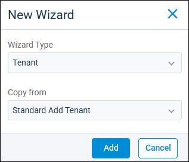
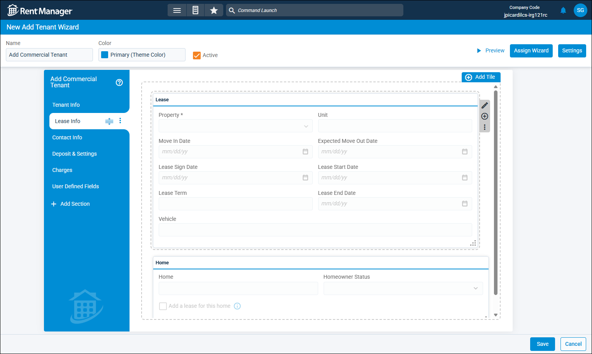
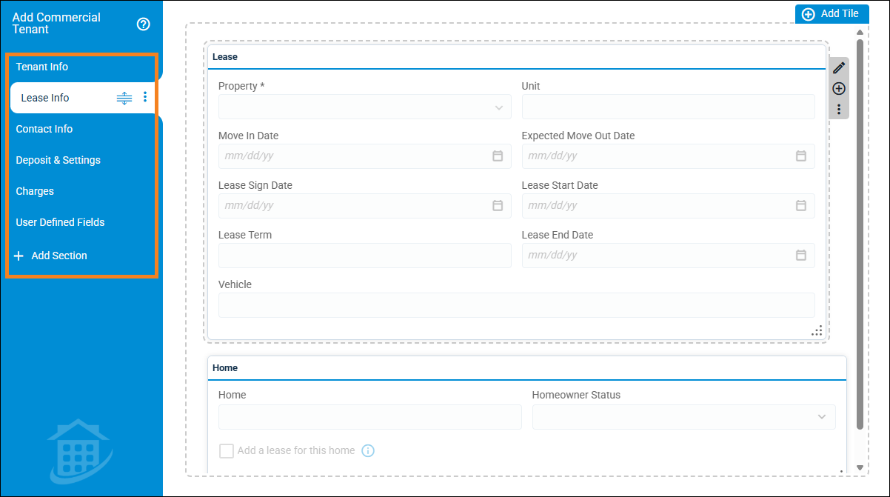
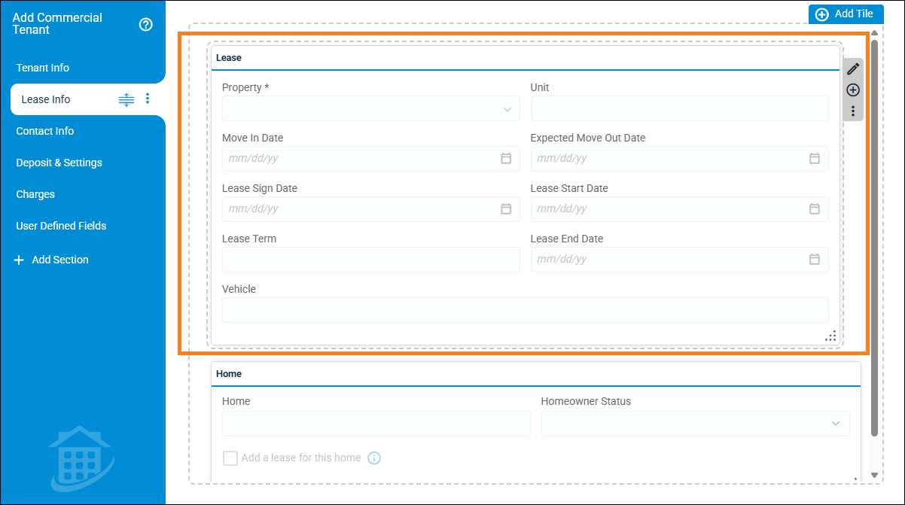
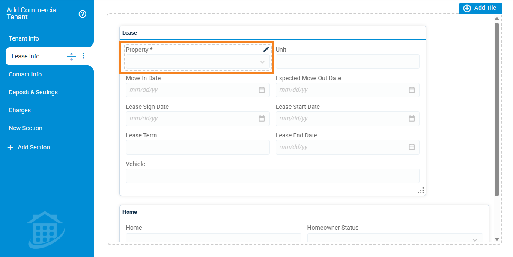

Source: https://rmxhelp.rentmanager.com/Topics/Express/Other/Wizards-Add.htm
Design a Wizard
Wizards are a step-by-step pop-up that guides the user through the process of creating new accounts or records, such as tenants and prospects. Additionally, you can customize the move-in and move-out wizards. You can customize the wizards in Rent Manager to control the amount of data that needs to be added during this process, as well as the order in which to add it.
There is a system default wizard template for each entity type. You can either create a copy of this system template to alter the process for a new wizard, or you can create a new wizard from scratch. System wizard templates cannot be edited or deleted.
Related Privileges
| Group | Privilege | Column |
|---|---|---|
| Setup | Add Wizards | Add, View |
For more information, refer to Control User Access.
Step 1: Create a Wizard
The first step to creating a customized wizard is to select whether you wish to create a wizard from scratch, edit a copy of a wizard template, or make modifications to a wizard imported from Rent Manager 12.
To create a new custom wizard, do the following:
-
Go to
 arrow_forward
arrow_forward  Administration, then go to .
Administration, then go to .
The Custom Wizards page displays. -
Click
 Add. To import and make adjustments to a custom wizard from Rent Manager 12, click the drop-down arrow next to Add and select Import RM12 Wizard.
Add. To import and make adjustments to a custom wizard from Rent Manager 12, click the drop-down arrow next to Add and select Import RM12 Wizard.
-
Select an option for the following fields:
Field Description Wizard Type
The entity for which you wish to create a custom wizard, such as Tenant, Move In, etc.
Copy from
If you wish to create a new wizard from scratch with no information populated, select Blank. To create a copy of an existing wizard and edit it to fit your needs, select that wizard from the drop-down list. For example, you can select Standard Add Tenant to modify a copy of the system add tenant wizard.
More Information
If you are importing a wizard from Rent Manager 12, this field displays as Import from. In the drop-down list, select the Rent Manager 12 wizard you wish to import to Express.
-
Click Add.
The new wizard is created and the wizard designer for your new wizard displays.
Step 2: Customize the Wizard
Once the wizard is created, you can use the wizard designer to customize it with a variety of colors, tabs, tiles, and fields.

At the top of the page, you can edit the following fields:
| Field | Description |
|---|---|
|
Active |
If checked, this wizard is available to be used in Rent Manager. Uncheck to disable this wizard. |
|
Color |
The color to display on the left panel of the wizard pop-up where the tabs are located. |
|
Name |
A unique label to identify the wizard, such as Add Commercial Tenant. This label also displays at the top of the left panel of the wizard pop-up. |
Customize Section Tabs
On the left panel of the wizard, you can create various tabs that separate the wizard into multiple sections. Section tabs are useful for organizing multiple tiles of related information into one group to create an efficient workflow.

The following actions can be taken to customize section tabs:
| Action | Description |
|---|---|
|
Add |
To add a new section tab to the wizard, click |
|
Delete |
To delete a section tab from the wizard, click |
|
Rename |
To change the label of a section tab, click the tab and double-click on the name to activate the text box. Then type in the desired name. |
|
Reorder |
To change the order of the section tabs, select the tab you wish to move. Then click and hold the |
Customize Tiles
Tiles organize related fields into a single container in the wizard. This allows you to streamline the order in which information is recorded as well as group associated fields together. You can also give each tile a custom name and color to help identify its purpose.
More Information
For custom Move In type wizards, it's recommended to add the system default Lease tile rather manually creating one. Using this option ensures you do not need to create multiple custom tiles to gather the same data the system default tile does automatically.

Select the section tab you wish to add or edit tiles for. The following actions can be taken to customize tiles:
| Action | Description |
|---|---|
|
Add |
To add a new tile to the selected section tab, at the top-right of the wizard, click |
|
Change Color |
To change the color of a tile's banner, click the tile's header to access the tile options. Then click |
|
Delete |
To remove a tile from the wizard, click the tile's header to access the tile options. Then click |
|
Move |
To move the tile to a different section tab, click the tile's header to access the tile options. Then click |
|
Rename |
To change the display name of a tile, click the tile's header to access the tile options. Then click |
|
Reorder |
To reposition the tile on the current section tab, click and hold the tile header. Then drag and drop it into the correct tile order on the wizard. |
|
Resize |
To adjust the size of a tile, click and hold the bottom right corner of the tile. Then drag and drop the corner to change the size and shape of the tile. |
Customize Fields
Fields are where you record information specific to the entity being created or moved with this wizard. You can place fields in tiles, but cannot place them directly on the wizard page outside of a tile. For any wizards imported from Rent Manager 12 that had floating fields, these fields will be automatically placed in a miscellaneous tile in Express.

Select the section tab you wish to edit fields for. The following actions can be taken to customize fields:
| Action | Description | |||||
|---|---|---|---|---|---|---|
|
Add |
To add a field to a tile, click the tile's header to access the tile options and click Some tiles, such as the User Defined Fields tile, cannot have fields removed or added. If you remove that tile from the wizard, you can individually add the tile's associated fields to other tiles. More Information Note that all fields in the Required Fields drop-down must be added somewhere on the wizard. These fields are also listed in a floating Required Fields tile to the right of the wizard designer. |
|||||
|
Delete |
To remove a field from the tile or section tab, click the field to select it. Then click |
|||||
|
Rename |
To change the display name of a field, click on the field to select it. Then click |
|||||
|
Reorder |
To reposition the field on the current section tab, click and hold the field. Then drag and drop it into the correct location on the current tile or another tile on that tab. |
|||||
|
Resize |
To change the size of a field, click on the field to select it. Then click Fields readjust in size as needed to ensure a consistent and symmetrical layout. For example, if you set two fields to Third but only have two fields on a line, they both display as half the wizard's width, even though their minimum width is set to be smaller. |
|||||
|
Set Conditions |
You can also set additional conditions or restrictions to a field, such as making it a required field or setting the field to read-only. The options available vary depending on the selected field. To set additional conditions, click the field to select it and then click |
|||||
|
Step 3: Configure Wizard Settings
You can also set up additional settings for the custom wizards, such as controlling payment information, and how to handle the transfer of data.
To control the additional wizard settings, do the following:
-
At the top of the page, click Settings.
The Wizard Settings pop-up displays. -
Enter or select information in the available fields. The fields that display vary depending on the type of wizard.
Option Description Payment Options
Check Add a payment after wizard is complete to open a pop-up for entering payment information when the wizard is completed.
Account Address Transfer
For custom Move In type wizards, this option determines how address information is transferred from the prospect account to the tenant account.
Prospect Address Type To Copy
The prospect address type that contains the address you wish to transfer to the tenant account.
Tenant Address Type For Copied Address
The tenant address type you wish to copy the selected prospect address into for the tenant account.
Contact Address Transfer
For custom Move In type wizards, this option determines how address information is transferred from the prospect's contacts to the tenant contacts.
Prospect Contact Address Type To Copy
The prospect address type that contains the contact address(es) you wish to transfer to the tenant contact(s).
Tenant Contact Address Type For Copied Address
The tenant address type you wish to copy the selected prospect contact address(s) into for the tenant contact(s).
-
Click OK.
The wizard's settings are updated.
Step 4: Assign Wizard
To determine when this add wizard displays before initiating the wizard, you must assign the custom wizard to the relevant property or property type. The options for assigning wizards vary depending on the wizard type.
To set up wizard assignments, do the following:
-
At the top, click Assign Wizard.
The Assign Wizard pop-up displays. -
In the Assignment Type field, select one of the available options.
Option Description Property
When initiating the wizard, this custom wizard displays when a specific property is selected.
Property Type
When initiating the wizard, this custom wizard displays when a property of a specific property type is selected.
-
Select each property or property type in the list that should trigger this custom wizard when adding an entity. Each option can be assigned to only one custom wizard at once.
-
Click OK.
The custom wizard is assigned to your selections.More Information
When initiating a wizard, if the selected property or property type does not have a specific wizard assigned, the wizard set as Default for that wizard type displays. For more information, refer to Custom Wizards (Page).
Step 5: Save the Wizard
Once you have finished designing and customizing your wizard, click Save. If you would like to see a preview of how the custom wizard displays when initiated, click Preview.